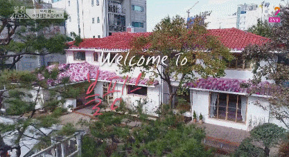

Origen e historia del grupo
BLACKPINK es un fenómeno global formado por Jennie, Jisoo, Rosé y Lisa, bajo la compañía YG Entertainment. Desde su debut el 8 de agosto de 2016, el grupo irrumpió en la escena musical con fuerza, capturando la atención de fans en todo el mundo gracias a su estilo único, carisma arrollador y talento inigualable. Con su single álbum Square One, lograron éxitos inmediatos como “Whistle” y “Boombayah”, que no solo dominaron las listas digitales en Corea, sino que también marcaron su presencia en el mercado internacional.
➧Integrantes
✦Jisso
✦Lisa
✦Rose
KIM JENNIE
JENNIE


Jennie Kim nació el 16 de enero de 1996 en Seúl, Corea del Sur, y vivió parte de su infancia en Auckland, Nueva Zelanda, donde perfeccionó su inglés. Ingresó a YG Entertainment en 2010 tras un casting y fue la primera miembro anunciada de BLACKPINK. Dentro del grupo, es rapera principal y vocalista. Antes de su debut, participó en canciones de otros artistas de YG, como Special de Lee Hi y GG Be de Seungri. Jennie debutó como solista el 12 de noviembre de 2018 con el sencillo SOLO, que rompió récords en listas digitales y YouTube. Ha trabajado como embajadora global de Chanel, Calvin Klein, Gentle Monster y Hera Beauty. También debutó como actriz en la serie de HBO The Idol (2023). Es reconocida por su estilo versátil, su flow único como rapera y su fuerte presencia escénica.
M/V solitario
KIM JI-SOO
JISSO


Kim Ji-soo nació el 3 de enero de 1995 en Gunpo, provincia de Gyeonggi, Corea del Sur. Se unió a YG Entertainment en 2011 como aprendiz y fue la tercera integrante revelada de BLACKPINK. Antes de su debut, apareció en comerciales, videos musicales y series coreanas. Debutó oficialmente con BLACKPINK el 8 de agosto de 2016 como vocalista principal y visual del grupo. Jisoo es reconocida por su voz dulce, carisma escénico y habilidades como actriz, participando en dramas como Snowdrop (2021), donde tuvo su primer papel protagónico. Además, ha sido embajadora de marcas de lujo como Dior, Cartier y Dior Beauty, consolidándose como un ícono de la moda. Su debut como solista llegó el 31 de marzo de 2023 con el álbum ME, cuyo sencillo principal Flower obtuvo gran éxito mundial.
M/V solitario
LALISA MANOBAL
LISA

Lalisa Manobal nació el 27 de marzo de 1997 en Buriram, Tailandia. Es la única integrante no coreana del grupo. Ingresó a YG Entertainment en 2011 tras ganar una audición en Tailandia, convirtiéndose en la primera aprendiz extranjera de la compañía. Debutó en 2016 como rapera principal, bailarina principal y maknae (la más joven) de BLACKPINK. Lisa es reconocida por su habilidad para el baile, su precisión rítmica y sus raps energéticos. Su debut solista fue el 10 de septiembre de 2021 con el álbum LALISA, que incluye LALISA y MONEY, ambos grandes éxitos internacionales. Lisa ha sido embajadora global de Celine, Bulgari y MAC Cosmetics. Es considerada una de las idols más influyentes del mundo, con récords en Instagram y YouTube, y un gran impacto cultural tanto en Asia como a nivel global.
M/V solitario
ROSEANNE PARK
ROSE


Rosé nació el 11 de febrero de 1997 en Auckland, Nueva Zelanda, y creció en Melbourne, Australia. En 2012, viajó a Corea del Sur tras una audición de YG Entertainment, quedando en primer lugar entre 700 concursantes. Fue la última integrante revelada de BLACKPINK y debutó como vocalista principal y bailarina principal. Antes de su debut, participó en la canción Without You de G-Dragon en 2012. Es conocida por su distintiva voz y habilidades con la guitarra y el piano. Su debut como solista llegó el 12 de marzo de 2021 con el single álbum R, que incluye On The Ground y Gone, obteniendo récords mundiales en visualizaciones y ventas. Rosé es embajadora global de Yves Saint Laurent y Tiffany & Co., y es vista como un referente de elegancia y talento musical en la industria.
M/V solitario
M/V Populares
Todos los M/V
| The Album | |
| How You Like That | Ice Cream (con Selena Gomez) |
| Pretty Savage | |
| Bet You Wanna (ft. Cardi B) | |
| Lovesick Girls | |
| Crazy Over You | |
| Love To Hate Me | |
| You Never Know | Born Pink |
| Shut Down | |
| Typa Girl | |
| Yeah Yeah Yeah | |
| Pink Venom | |
| Hard to Love | |
| The Happiest Girl | |
| Tally | |
| Ready For Love | Square Up (EP) |
| Ddu-Du Ddu-Du | Forever Young |
| Really | |
| See U Later | Kill This Love (EP) |
| Kill This Love | Don’t Know What To Do |
| Kick It | |
| Hope Not | |
| Ddu-Du Ddu-Du (Remix) | Square Two (Single Album) |
| Playing With Fire | Stay |
| Whistle (Acoustic Ver.) | Square One (Single Album) |
| Boombayah | Whistle |
Blackpink House
¿Sabías que BLACKPINK no solo lanza éxitos musicales?
El famoso grupo de K-pop formado por Jennie, Jisoo, Rosé y Lisa no
solo se ha destacado por sus exitosos sencillos, álbumes y presentaciones
en vivo, sino que también quiso mostrar un lado más cercano y personal a
sus fans. Para lograrlo, lanzaron su propia serie de telerrealidad llamada
BLACKPINK HOUSE, un proyecto que combina entretenimiento, diversión y momentos
auténticos de la vida diaria de las integrantes.
La serie, emitida en 2018, sigue a las cuatro integrantes durante 100
días en una casa especialmente diseñada para ellas, decorada con colores y
elementos que reflejan la personalidad de cada miembro.
A lo largo de los episodios, los fans pueden ver a Jennie, Jisoo, Rosé y Lisa en situaciones
cotidianas, desde preparar sus comidas favoritas, realizar juegos y actividades
divertidas, hasta compartir viajes y celebraciones especiales. Este enfoque
permite conocer facetas del grupo que normalmente no se muestran en los
escenarios ni en los videos musicales.
BLACKPINK HOUSE también destaca por mostrar la dinámica entre las integrantes:
su amistad, complicidad y sentido del humor se vuelven protagonistas, haciendo
que los fans sientan que están acompañándolas en cada momento. Además, la serie
sirve como un espacio para que las integrantes se relajen y se diviertan juntas,
mostrando su lado humano y natural lejos de la presión de la fama y las giras internacionales.

➢Si deseas recibir más informacion por mail, completas los siguientes datos: